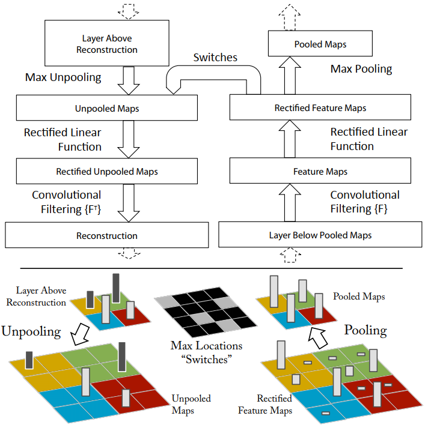
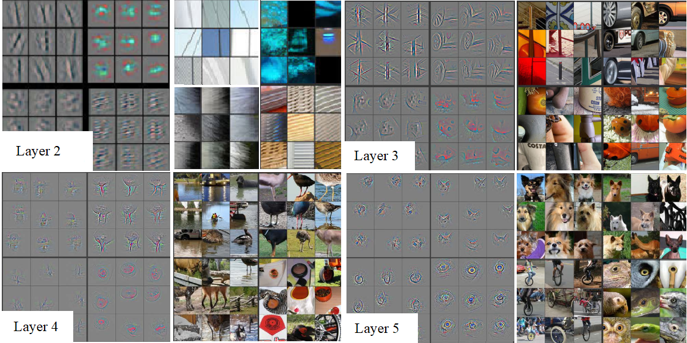
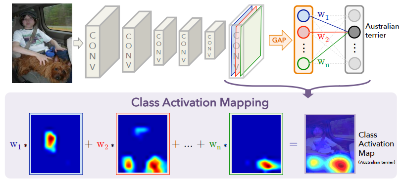
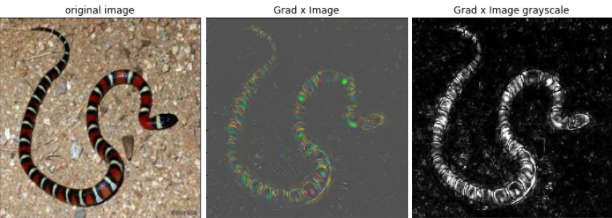
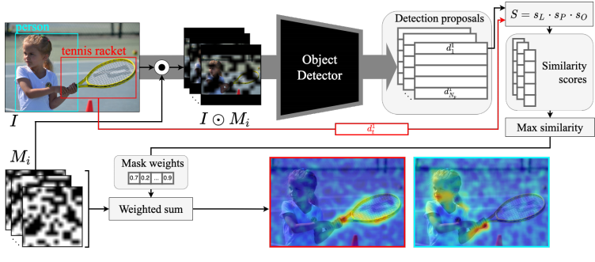
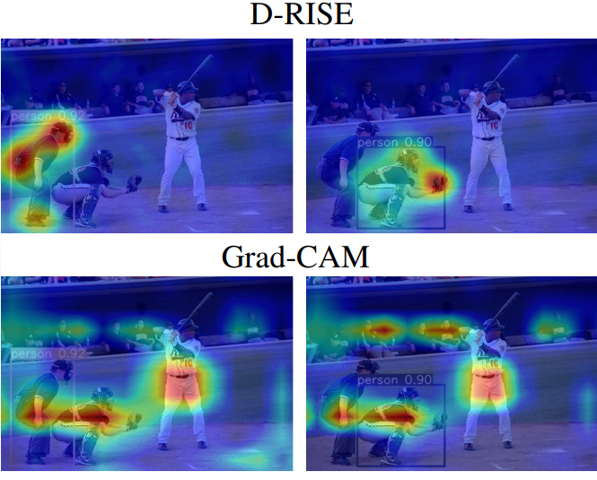

Saliency Maps I.

Introduction
Understanding the inner workings of deep neural networks (DNNs) is crucial for improving their performance and interpretability. In recent years, the development of visualization techniques, particularly saliency maps, has provided insights into how DNNs make decisions. Saliency maps highlight regions of input data that contribute most to the network's output, offering valuable interpretability in various applications, particularly in computer vision tasks.
Visualization techniques
Saliency maps aim to uncover the features and patterns in input data that drive the decisions made by DNNs. These maps provide visual explanations, aiding in understanding model behavior and improving trust in automated systems. Through techniques such as Deconvolutional Network Approach, Gradient-Based Approach, Guided Backpropagation Algorithm, Class Activation Mapping (CAM), Grad-CAM, Guided Grad-CAM, SmoothGrad, Grad x Image, and D-RISE, researchers have made significant strides in enhancing the interpretability of DNNs.
| Method | Description | Link |
|---|---|---|
| Deconvolutional Network Approach | Utilizes a multi-layered Deconvolutional Network to project feature activations back to the input pixel space. | Paper |
| Gradient-Based Approach (Vanilla) | Generates image-specific class saliency maps using back-propagation through a classification ConvNet. | Paper |
| Guided Backpropagation Algorithm | Performs a backward pass of activations to visualize the part of an image that activates a given neuron. | Paper |
| Class Activation Mapping (CAM) Approach | Highlights discriminative image regions used by a CNN to identify specific categories. | Paper |
| Grad-CAM | Utilizes gradients of a target concept flowing into the final convolutional layer to produce a coarse localization map. | Paper |
| Guided Grad-CAM | Extends Grad-CAM by combining fine-grained visualization techniques with its coarse-grained output. | Paper |
| SmoothGrad | Smooths sensitivity maps based on raw gradients using a Gaussian kernel to reduce noise. | Paper |
| Grad x Image | Produces saliency maps by taking the element-wise product of the input image and the gradient. | Paper |
| D-RISE | A black-box attribution technique for explaining object detectors via saliency maps, using input masking. | Paper |
Problem Definition
Convolutional Neural Networks (CNNs) have become indispensable in computer vision, shining in tasks like CIFAR-10 and ImageNet 2012 classification. Yet, unraveling how they achieve such feats remains a puzzle. Despite their stellar performance, understanding their inner workings is still a challenge.
Imagine CNNs as layered puzzles. While we can easily see the outer layers, understanding the deeper ones is tougher. This lack of clarity hampers our ability to improve these models effectively.
Saliency maps are handy tools, that offer a clearer view of CNNs' internal operations by analyzing network activations. Let's embark on this journey together and decode the secrets of CNNs' success. Ready? Let's dive in!
Deconvolutional Network Approach
The Deconvolutional Network Approach offers valuable insights into understanding higher-level representations within a CNN. By employing a multi-layered Deconvolutional Network (DeconvNet), this technique projects feature activations back to the input pixel space, shedding light on which patterns activate specific feature maps through top-down projections.
Let's illustrate this with an example. Suppose we have a 2D input image xi, which is processed by a multi-layered CNN, such as VGG16, to generate a probability vector yi across C different classes. In the CNN architecture, each layer in the feature extractor applies operations like convolution, ReLU activation, or max pooling. Subsequently, fully-connected layers with ReLU activation produce logits, followed by a softmax function to derive class probabilities.
Now, to map convolutional feature activities back to the input pixel space, we employ a Deconvolutional Network (DeconvNet). The architecture of DeconvNet mirrors that of the backbone model, with layers arranged in reverse order. Notably, DeconvNet is not trained separately; instead, it utilizes the same weights as the corresponding layers in the backbone ConvNet.
To reconstruct activation patterns in the backbone CNN, we isolate a specific feature map activation and input it into the corresponding DeconvNet layer. Through a series of operations including unpooling, rectification, and filtering, activations from lower layers can be reconstructed. This process offers valuable insights into the inner workings of the CNN, revealing how features are extracted and processed across different layers.
To achieve activation reconstruction, the DeconvNet approach employs several key strategies:
- Handling Max Pooling: Max pooling, while effective for down-sampling, is non-invertible. To approximate its inverse, the approach records the locations of max values within each pooling region, storing them as "switches" for later unpooling.
- Ensuring Positivity: Convolutional Neural Networks (CNNs) typically utilize ReLU activation functions, ensuring that feature maps remain positive. This positivity is crucial for DeconvNet reconstructions, where ReLU activations are also employed.
- Utilizing Learned Filters: CNNs employ learned filters to extract feature maps at each layer. In contrast, DeconvNet utilizes transposed versions of these filters. However, these filters are applied to rectified maps rather than the output of the layer beneath.
When projecting down from higher layers, the switch settings generated by max pooling in the ConvNet are utilized. These settings, specific to each input image, guide the reconstruction process. As a result, the reconstruction obtained from a single activation resembles a portion of the original input image, with structures weighted based on their contribution to the feature activation.
Examining reconstructed features from top activations alongside corresponding input images provides valuable insights. It's important to note that these reconstructions aren't generated samples; rather, they are reconstructed patterns that induce high activations in specific feature maps. This approach doesn't involve a generative process but instead reconstructs patterns to understand their contribution to feature activations.
Gradient-Based Approach (Vanilla)
The Gradient-Based Approach offers a broadened perspective on the reconstruction process beyond Deconvolutional Networks. This method enables the generation of image-specific class saliency maps through a single back-propagation pass within a classification Convolutional Neural Network (CNN).
Its key advantages include:
- No Additional Annotation Required: Saliency maps are derived directly from a classification ConvNet trained on image labels, eliminating the need for extra annotations.
- Efficiency: The computation of a saliency map for a single class is highly efficient, requiring only a single back-propagation pass.
To compute a saliency map \( M \) for an image \( x \) with \( m \) rows, \( n \) columns, and \( c \) class labels, the following steps are taken:
- Calculate the derivative \( w \) via back-propagation.
- Rearrange the elements of the vector \( w \) to obtain the saliency map.
- For grey-scale images, the map is computed as \( M(i, j) = \left| w(h(i, j)) \right| \), where \( h(i, j) \) represents the index of the element \( w \).
- For RGB images, the color channel \( c \) of the pixel \( (i, j) \) corresponds to the element of \( w \) with index \( h(i, j, c) \). To derive a single class saliency map value for each pixel \( (i, j) \), take the maximum magnitude of \( w \) across all color channels: \( M(i, j) = \max(c) \left| w(h(i, j, c)) \right| \).
The resulting saliency maps are then utilized for various tasks, such as object segmentation. For instance, in the ILSVRC-2013 challenge, GraphCut color segmentation method is employed alongside the image and saliency map. The thresholded saliency map delineates regions for foreground and background color model calculation, visually represented by blue and cyan respectively, while red pixels are excluded from the color model estimation. Finally, the foreground segmentation masks, visualized in the last column, serve as a validation of the effectiveness of the method in object segmentation tasks.

There's a strong connection between the two methods we've discussed. DeconvNet's way of rebuilding layers is quite similar to how we calculate gradients for the activations concerning the convolutional layer \( X_{(n)} \).
Let's break down the differences in how DeconvNet works:
- In DeconvNet, when we have a convolutional layer \( X_{(n+1)} = X_{(n)} \ast K_{(n)} \), we compute the gradient as \( \frac{\partial f}{\partial X_{(n)}} = \frac{\partial f}{\partial X_{(n+1)}} \ast \hat{K}_{(n)} \). Here, \( K \) and \( \hat{K}_{(n)} \) represent the convolutional kernel and its flipped version, respectively. It's like we're doing a convolution operation with the flipped kernel to get the \( n \)-th layer reconstruction \( R_{(n)} \).
- When we use ReLU in DeconvNet \( X_{(n+1)} = \max(X_{(n)}, 0) \), the gradient is calculated as \( \frac{\partial f}{\partial X_{(n)}} = \frac{\partial f}{\partial X_{(n+1)}} \cdot \mathbb{1}(X_{(n)} > 0) \). Here, \( \mathbb{1} \) is an indicator function. The DeconvNet ReLU reconstruction \( R_{(n)} \) is a bit different; we compute it as \( R_{(n)} = R_{(n+1)} \cdot \mathbb{1}(R_{(n+1)} > 0) \), where the sign indicator is based on the output reconstruction \( R_{(n+1)} \) instead of the layer \( X_{(n)} \).
- In max-pooling layers, DeconvNet works by computing \( X_{(n+1)}(p) = \max_{q \in \Omega(p)} X_{(n)}(q) \), where \( p \) represents an element of the output feature map obtained by pooling over the corresponding spatial neighborhood \( \Omega(p) \) of the input. Here, the gradient is \( \frac{\partial f}{\partial X_{(n)}(s)} = \frac{\partial f}{\partial X_{(n+1)}} \cdot \mathbb{1}(s = \text{argmax}_{q \in \Omega(p)} X_{(n)}(q)) \). The \( \text{argmax} \) operation corresponds to the max-pooling "switch" in DeconvNet.
Overall, besides ReLU, using DeconvNet to reconstruct \( R_{(n)} \) is like using backpropagation to compute the derivative \( \frac{\partial f}{\partial X_{(n)}} \). So, gradient-based visualization is a broader approach than Deconvolutional Networks because it can be applied to different types of layers, not just convolutional ones.
Guided Backpropagation Algorithm

In the Deconvolutional Network Approach, reconstructing through max-pooling layers involves first executing a forward pass to compute "switches." These switches guide the DeconvNet to produce a discriminative reconstruction, which is conditioned on an input image and doesn't directly visualize learned features.
On the other hand, the Guided Backpropagation Algorithm employs a fully-convolutional network with strided convolutional layers for dimensionality reduction, omitting pooling layers, thus enabling "deconvolution" without switches. To visualize the image portion that most activates a specific neuron, a straightforward backward pass of the activation of that neuron after a forward pass through the network is conducted, computing the gradient of the activation with respect to the image.
While both DeconvNet and Backpropagation methods vary mainly in their treatment of backpropagation through rectified linear (ReLU) nonlinearities, combining these approaches involves masking out values where either the top gradient ("DeconvNet") or bottom data (Gradient-based Approach) is negative, ensuring a cohesive integration of the two methods.
Formally defined as:
-
Activation: \( f_{i}^{(l+1)} = \text{ReLU}(f_{i}^{(l)}) \)
-
Backpropagation: \( R_{i}^{(l)} = (f_{i}^{(l)} > 0) \cdot R_{i}^{(l+1)} \), where \( R_{i}^{(l+1)} = \frac{\partial f^{\text{out}}}{\partial f^{(l+1)}_{i}} \)
-
Backward DeconvNet: \( R_{i}^{(l)} = (R_{i}^{(l+1)} > 0) \cdot R_{i}^{(l+1)} \)
-
Guided Backpropagation: \( R_{i}^{(l)} = (f_{i}^{(l)} > 0) \cdot (R_{i}^{(l+1)} > 0) \cdot R_{i}^{(l+1)} \)
The method makes two significant contributions: Firstly, it introduces an extra guiding signal from higher layers into the standard backpropagation process. Secondly, it effectively blocks the reverse flow of negative gradients associated with neurons that diminish the activation of units in higher layers.
Class Activation Mapping (CAM) Approach
In the Class Activation Mapping (CAM) method, we aim to understand how specific units in the last convolutional layer contribute to class identification in a given image. Let \( f_k(x, y) \) represent the activation of unit \( k \) at spatial location \( (x, y) \). By performing global average pooling, we obtain \( F^k = \sum_{(x, y)} f_k(x, y) \), which reflects the overall activation of unit \( k \).
When considering a particular class \( c \), the input to the softmax is calculated as \( \sum_{k} w_k^c F_k \), where \( w_k^c \) represents the weight corresponding to class \( c \) for unit \( k \). This weight indicates the significance of \( F_k \) for identifying class \( c \). The CAM saliency map for class \( c \) is then determined by summing over all units \( k \), weighted by \( w_k^c \times f_k(x, y) \).
As we delve deeper into the network, the units tend to become more specialized in discerning different classes. While the fully-connected layers in some networks pose challenges in understanding unit importance, employing Global Average Pooling (GAP) along with ranked softmax weights allows us to visualize the most discriminative units for a specific class, thereby identifying class-specific features of a CNN.
Grad-CAM and Guided Grad-CAM
The Gradient-weighted Class Activation Mapping (Grad-CAM) approach is designed to highlight important regions in an image for predicting a specific concept by leveraging gradients flowing into the final convolutional layer. This technique offers versatility as it can be applied to various CNN architectures without requiring architectural changes or re-training. It's effective for tasks like visual question answering, even with multimodal inputs.
However, Grad-CAM has limitations in its ability to provide fine-grained visualizations, producing only coarse localization maps. To address this, Grad-CAM can be complemented with other techniques such as the Guided Backpropagation Algorithm. Additionally, the Class Activation Mapping (CAM) method, on which Grad-CAM builds, is constrained by the requirement for feature maps directly preceding softmax layers, limiting its applicability to specific CNN architectures.
Unlike CAM, Grad-CAM can generate visual explanations for any CNN, including those with fully connected layers like the VGG networks. The core concept involves directing gradients of a target concept score, such as logits for a particular class like "human’s face," into the final convolutional layer. By analyzing these gradients, Grad-CAM produces coarse localization maps, effectively highlighting critical regions in the image relevant to predicting the target concept.

The method is the following:
- First compute the gradient of the score for class \( c \), \( y_c \) (before the softmax), with respect to feature map activations \( A_k \) of a convolutional layer: \(\frac{\partial y_c}{\partial A_k}\).
- GAP is applied to these gradients to obtain the neuron importance weights \( \alpha_k^c \). Formally: \( \alpha_k^c = \frac{1}{Z}\sum_i \sum_j \frac{\partial y_c}{\partial A^{i,j}_k} \).
- Then, a weighted combination of forward activation maps is performed, followed by a ReLU to obtain the Grad-CAM matrix in respect to \( c \). So it is defined as: \( \text{Grad-CAM}_c = \text{ReLU}\left( \sum_{k} \alpha_k^c A^k \right) \).
Guided Grad-CAM extends Grad-CAM by integrating a fine-grained visualization technique with its coarse-grained output. To simplify the process, Guided Grad-CAM computes the final output by performing an element-wise multiplication of the guided-backpropagation visualization and Grad-CAM’s visualization.
SmoothGrad method

It's evident that recent advancements in the field often build upon existing techniques proposed in the literature, aiming for incremental enhancements in their outputs. SmoothGrad follows a similar trajectory. While gradients offer valuable insights as sensitivity maps, raw gradient-based maps tend to exhibit visual noise, often containing responses unrelated to the target label.
The question arises: How can we refine these maps to reduce noise effectively? One approach, as seen in SmoothGrad, involves introducing noise to an image and evaluating the saliency map generation algorithm multiple times. Rather than relying solely on raw gradients, SmoothGrad proposes smoothing the gradient using a Gaussian kernel.
SmoothGrad functions as an extension to gradient-based explanation methods rather than standing alone. While directly computing a local average in a high-dimensional input space is impractical, we can resort to a straightforward stochastic approximation by sampling random points in the vicinity of an input \(x\) and averaging the resulting sensitivity maps.

Formally defined as:
\[ \text{SmoothGrad}_c = \frac{1}{n}\sum_{i=1}^{n} M_c(x+ \mathcal{N}(0,\sigma^2)) \]where \( n \) is the number of samples, \( \mathcal{N}(0,\sigma^2) \) represents Gaussian noise with standard deviation \( \sigma \).
Adding noise and averaging over these artificially noisy gradients will make gradient-based explanations less noisy.
The SmoothGrad algorithm can be algorithmized as follows:
- Generate multiple versions of the image of interest by adding noise to it.
- Create pixel attribution maps for all images.
- Average the pixel attribution maps.
Grad x Image method
Another approach to generating saliency maps involves taking the element-wise product of the input image \( x_0 \) and the gradient, which effectively mitigates "gradient saturation" and diminishes visual diffusion.
To implement this straightforward method, simply multiply the outcome of the Guided Backpropagation Algorithm with the input image. It's a simple yet potent combination — truly the best of both worlds!
D-RISE method
Explanation techniques often depend on how a model is built and make certain assumptions about its structure. For example, Grad-CAM assumes that each feature map represents a specific concept, allowing them to be weighted based on their importance for the final output. However, this assumption doesn't always work well for models designed for object detection tasks.
Now, there's a method called Detector Randomized Input Sampling for Explanation (D-RISE). It uses a clever input masking technique first introduced by RISE. This approach lets us explain more complex detection models without needing to rely on intricate details or gradients from the underlying object detector.
The main contribution is the following: A black-box attribution technique D-RISE is proposed for explaining object detectors via saliency maps, by defining a detection similarity metric. As a black-box method, while typically slower at run time, can save developer time due to their higher generalizability and ease of application, which still counts as a big advantage. The D-RISE method is inspired by the randomized perturbations (masks) applied to the image by the RISE model to explain object classifiers, except that we leverage the random-masking idea to explain object detectors.
The main idea is to measure the effect of masking randomized regions on the predicted output, using changes in a DNN-based detector model f's output to determine the importance. Object detection \( d \) is specified by a bounding box and a corresponding category label. In contrast with classification models, object detection models are designed and trained with regression objectives and do not have a single proposal directly corresponding to any arbitrary bounding box with particular coordinates. Instead, many proposals are produced, with bounding boxes that differ and overlap to varying degrees with the bounding box provided as input to the explanation algorithm.
It is important to determine not just how we measure the disturbance in the output but also where we measure it in terms of which disturbances do we select from among the proposals produced by a network:
\( S(d_{t},f(M_{i} \odot I)) = \max_{d_{j} \in f(M_{i} \odot I)} s(d_{t},d_{j}) \), where \( S \) denotes the similarity between target detection vector \( d_{t} \) and new detection proposals for the modified Image \( I \).
Mask generation algorithm is adapted from RISE:
- Sample \( N \) binary masks by setting each element independently to 1 with probability \( p \) and to 0 with the remaining probability.
- Upsample all masks to size using bilinear interpolation
- Crop areas with uniformly random offsets
The similarity metric is the Intersection over Union (IoU) to measure the spatial proximity of the bounding boxes encoded by two vectors. To measure the how similar two regions look to the network, cosine similarity of the class probabilities associated with the regions is used. The final similarity score is defined based on high confidence detections and objectness score as well, and formally defined as:
\( s(d_{t},d_{j}) = s_{L}(d_{t},d_{j}) + s_{P}(d_{t},d_{j}) + s_{O}(d_{t},d_{j}) \), where \( s_{L}(d_{t},d_{j}) = IoU(L_{t},L_{j}) \), \( s_{P}(d_{t},d_{j}) = \frac{P_{t} \cdot P_{j}}{\|P_{t}\| \cdot \|P_{j}\|} \) and objectness \( s_{O}(d_{t},d_{j}) = O_{j} \).
(If the detector does not provide such metric, it can be simply omitted)
Now, that the mask generation and the similarity metric are defined, let's see how the saliency map is created:
- First, generate multiple RISE masks
- Convert the target detections to be explained into detection vectors. Run the detector on masked images only once to get the saliency maps for all detections.
- Run the detector on masked images producing proposals for each image
- Compute pairwise similarities between two sets of detection vectors \( D_{t} \) and \( D_{t} \) and take maximum score per each masked image per each target vector.
- Compute a weighted sum of masks \( M_{i} \) with respect to computed weights \( w_{i}^{t} \) to get saliency maps: \( H_{t} = \sum_{i=1}^{N} w_{i}^{t} M_{i} \)
As mentioning technical details, the number of masks are determined as \( N=5000 \), and D-RISE runs in approximately 70s per image.
Conclusion
To wrap up, diving into saliency map visualization techniques has been crucial for unraveling the inner workings of deep neural networks. These methods offer valuable insights into how these complex models make decisions. As we continue exploring this field, the importance of transparent and interpretable AI systems becomes increasingly evident. By demystifying the workings of neural networks, these techniques pave the way for more reliable and trustworthy applications across various domains. Embracing these methods is essential for gaining a deeper understanding of AI systems and ensuring their reliability in real-world applications.
Next, we'll put our newfound understanding into practice by diving into the implementation of these methods. Through hands-on exercises, we'll explore how to apply these techniques to analyze and interpret neural network behavior in concrete scenarios.